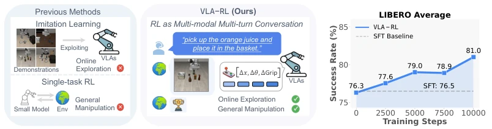
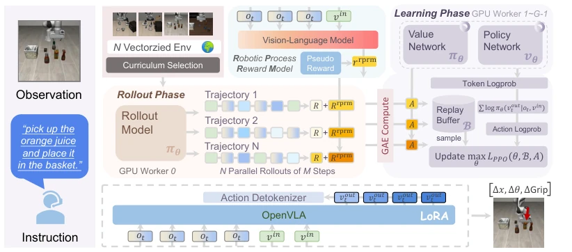
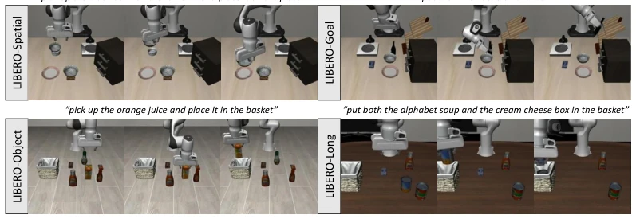
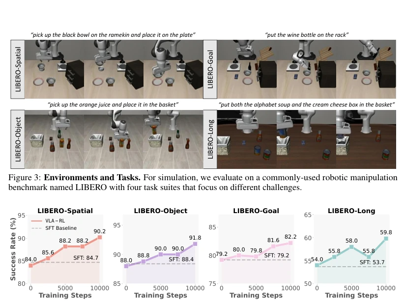
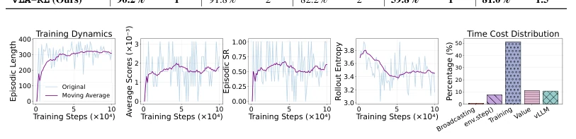

This paper attempts to inject "soul" into VLA models by replacing pure imitation learning with RL. OpenVLA-7B achieved a 4.5% improvement on LIBERO, even matching the commercial model π0-FAST, which is indeed notable. The authors treat robot trajectories as multi-turn dialogues and use RPRM to address sparse rewards; this approach is well-known in the LLM community, but making it work on robots is not easy. However, simulation environments are ultimately not reality, the pseudo-reward generation logic is somewhat of a black box, and what if the robot learns to "game the system"? Moreover, only autoregressive models were employed, while diffusion policies remain untested. Overall, this represents an important step for VLA from being "obedient" to "capable", but there is still a gap to true general-purpose robots; do not overhype scaling laws, pass real-world testing first.
Existing VLA models mainly rely on offline human demonstrations for imitation learning (IL) [39]; although generalization is acceptable, they are prone to execution failure in out-of-distribution (OOD) scenarios because offline data covers limited states. Traditional RL training is often data-inefficient and requires extensive reward engineering [66], making it difficult to handle high-dimensional states. Although RL has made progress in the LLM field [17], it has not been effectively transferred to the robotics field. This paper aims to solve the problem of VLA's inability to explore new states during testing, extending VLA capabilities through online RL to transcend offline data limitations and achieve more general manipulation skills.

Figure 1: Previous VLAs focus on imitation learning that exploits the offline demonstrations, while VLA-RL ex- plores improving high-capacity VLAs with scalable reinforcement learning. For evaluation, we train OpenVLA- 7B to master 40 challenging robotic manipulation tasks in LIBERO, and show a notable consistent improvement over the imitation learning baseline.
The VLA-RL framework includes a policy network, a value network, and a frozen Robot Process Reward Model (RPRM). The overall process models VLA training as a multimodal multi-turn dialogue, where states are images and instructions, and actions are output token sequences. The core innovation lies in RPRM, which models rewards as next-token prediction, training using pseudo-labels from successful trajectories to solve the sparse reward problem. At the system level, curriculum selection strategy (prioritize 50% success rate tasks), Critic Warmup (train value network first), GPU-balanced vectorized environments, and batch decoding are introduced to improve stability. Training adopts the PPO algorithm, calculating advantages via GAE, combined with LoRA fine-tuning of the policy network, ultimately achieving online policy optimization. Specifically, RPRM generates pseudo-reward labels by automatically extracting milestones and keyframes from task segments, requiring no manual annotation. The policy network is based on OpenVLA-7B, using LoRA for fine-tuning. Environment interaction uses parallel rollout; after collecting trajectories, token logprob and GAE advantages are calculated. During the Critic Warmup phase, data is collected using the imitation policy to train the value network first, avoiding policy collapse caused by inaccurate early value estimation. Regarding GPU allocation, one card is used for inference (vLLM), while the rest are used for training (Ray), solving the VRAM bottleneck.

Figure 2: The overall pipeline of VLA-RL, which is composed of a transformer-based policy, a homogeneous value model, a frozen robotic process reward model, and the vectorized environments.
Tested on 4 task suites (Spatial, Object, Goal, Long) of the LIBERO benchmark, using OpenVLA-7B as the base. Baselines include Diffusion Policy, Octo, GRAPE, and the commercial model π0-FAST. The metric is average Success Rate (SR). Results show VLA-RL improved by 4.5% over the SFT baseline, with SR reaching 81.0%, surpassing most open-source models and approaching π0-FAST. Ablation studies indicate that removing RPRM or Curriculum leads to significant performance degradation. Training dynamics show episode length decreases with training, and performance improves with increased test-time compute, implying the existence of inference scaling laws.

Figure 3: Environments and Tasks. For simulation, we evaluate on a commonly-used robotic manipulation benchmark named LIBERO with four task suites that focus on different challenges.

Figure 4: Test-time Scaling Curve. We evaluate the fine-tuned OpenVLA-7B every 2500 training steps on the complete suite and report the average task success rates.

Figure 5: Training Dynamics. We draw the length of generated episodes, reward dynamics and rollout entropy along the training process on LIBERO-Long.